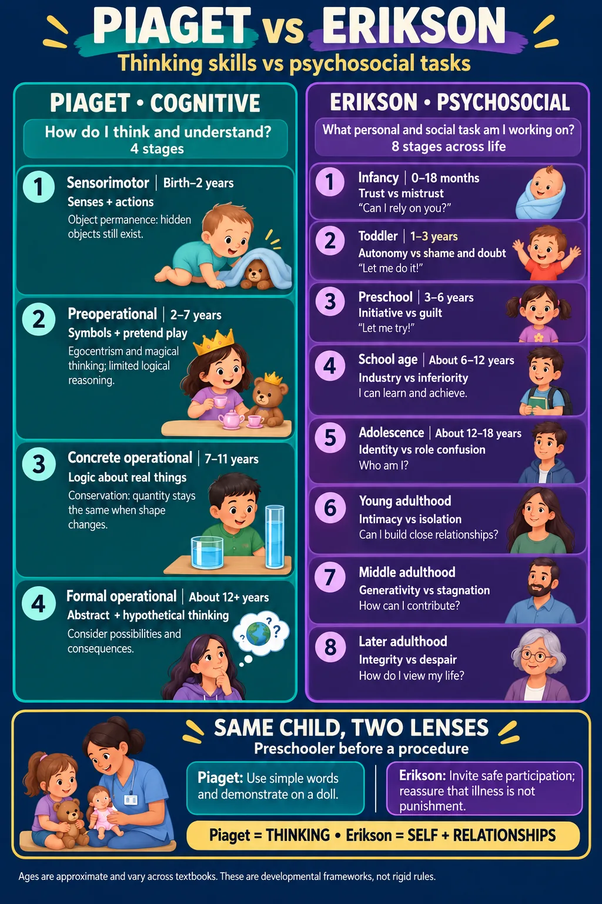

ABSN STUDY HUB · VISUAL STUDY CARD
Development: psychosocial stages

Course labels and notes from the original graphic, arranged into readable sections. The illustration is schematic.
Original course labels
- INFANT 0–18 mo
- Trust vs mistrust
- solitary play · fears SEPARATION
- TODDLER 1–3 y
- Autonomy vs shame
- PARALLEL play · give LIMITED CHOICES
- PRESCHOOL 3–6 y
- Initiative vs guilt
- associative play · fears BODILY HARM
- SCHOOL AGE 6–12 y
- Industry vs inferiority
- COOPERATIVE play · wants to achieve
- ADOLESCENT 12–18 y
- Identity vs role confusion
- peer group · needs CONFIDENTIALITY